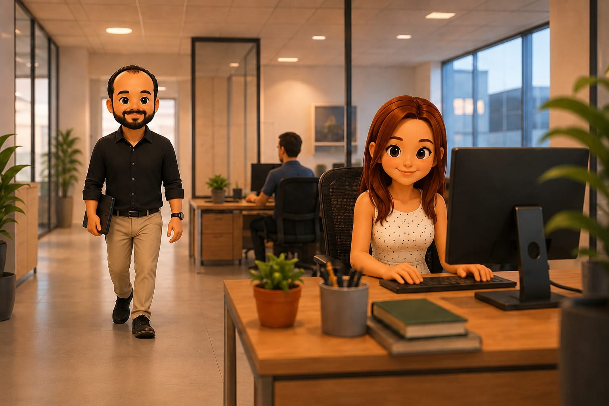

01
A primeira conversa
Quando os caminhos se cruzaram
Tudo começou de um jeito simples, quase sem aviso. Entre uma conversa e outra, descobrimos coincidências, histórias e uma sintonia que parecia antiga demais para quem tinha acabado de se conhecer. Naquele dia, ainda não sabíamos, mas alguma coisa importante estava começando.